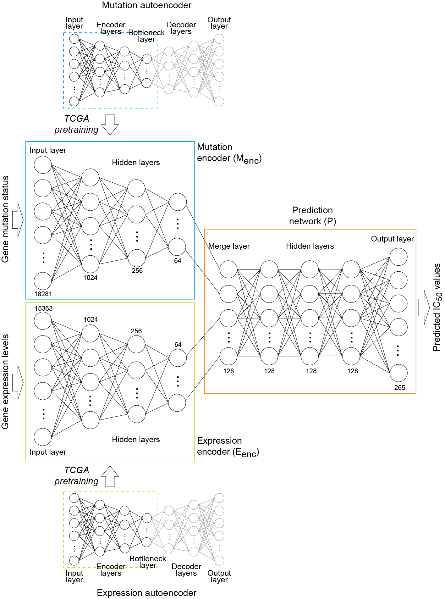
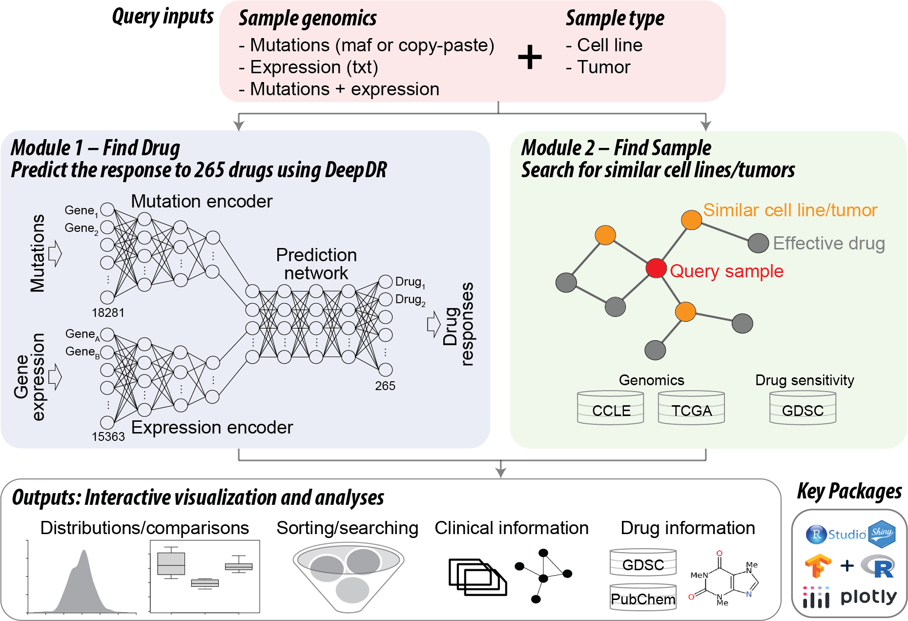

DeepDR is a deep learning model that predicts drug sensitivity using mutation and/or gene expression profiles in a cancer sample (cell line or tumor) (Chiu et al. BMC Medical Genomics 2019). shinyDeepDR is an R Shiny app that provides a user-friendly interface to DeepDR with no requirement of programming skills. shinyDeepDR runs two main analysis modules with user's uploaded genomic data, Module 1: Find Drug (core module) and Module 2: Find Sample. Here we provide an overview of our tool. For details regarding the input data format or each module, please visit corresponding help pages or click on the question mark at each input/output section.
DeepDR: Deep Learning-Based Prediction of Drug Response of Tumors from Integrated Genomic Profiles
Given a pair of mutation and expression profiles, DeepDR predicts IC50 values of 265 FDA-approved or investigational anti-cancer compounds. It contains three deep neural networks:
In the publication of DeepDR, we have systematically evaluated the prediction performance using hold-out cancer cell lines by multiple measures, including mean squared error in drug response and per-cancer cell line correlation coefficients between real and predicted data (Pearson and Spearman correlation coefficients, 0.70-0.96 and 0.62-0.95, respectively). DeepDR achieved marked improvement over conventional methods, including linear regression, support vector machine, and alternative deep learning models trained either with cell lines alone without transferring features learned from tumors, or using principal components to replace encoder outputs. Furthermore, we validated the predictions by real-world clinical data of corresponding patients, such as an approved estrogen receptor agonist (tamoxifen) for breast cancer, approved drugs targeting the EGFR mutations (afatinib and gefitinib) for non-small cell lung cancer, and an investigational compound, CX-5461, for treating hematopoietic malignancies. Please refer to the publication of DeepDR (Chiu et al. BMC Medical Genomics 2019) for more details regarding model design, validation, and applications.
We also built mutation-alone and expression-alone models for samples with only one omics data available.

shinyDeepDR: Implementation of DeepDR by a User-Friendly R Shiny Framework
Module 1: Find Drug that is predicted to be effective in inhibiting the query sample
Module 1 runs DeepDR to predict the query sample’s response to 265 anti-cancer compounds. The app provides an intuitive user interface to interactively visualize, search, and filter all prediction results, as well as detailed annotations of individual compounds.
Module 2: Find Sample that shares similar genomic features to the query sample
Module 2 searches for cell lines in the CCLE or tumors of TCGA that have similar genomic features to those of the query sample and examines their real or predicted drug responses. We incorporated real drug response data of pan-cancer cell lines from the Genomics of Drug Sensitivity in Cancer (GDSC; 265 compounds x 704 cell lines) and prediction by our DeepDR model, as well as predicted drug responses of pan-cancer tumors from our publication of DeepDR (265 compounds x 9,059 tumors).
